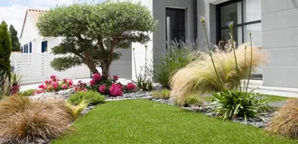
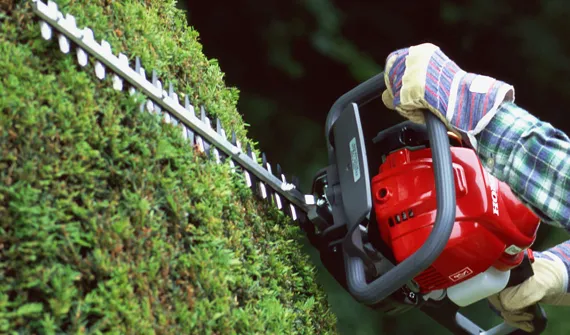

- Accueil
- Zones d’intervention
- Wambrechies
Le Ch’ti Élagueur : Votre artisan élagueur du coin à Wambrechies 59118
Élagueur à Wambrechies · 59118
Chez le Ch’ti Élagueur, nous considérons chaque espace extérieur comme une toile vierge prête à être transformée en un véritable paradis verdoyant à Wambrechies 59118. En tant qu’artisan paysagiste, nous unissons passion et expertise pour donner vie à vos idées d’aménagement paysager. Notre équipe dévouée prend en charge l’intégralité du processus, de la conception à la réalisation, en passant par l’entretien régulier. Que vous recherchiez un paysagiste élagueur pour façonner vos arbres ou simplement un entretien de jardin professionnel pour garder votre espace extérieur impeccable, le Ch’ti Élagueur est là pour vous. Un devis paysagiste personnalisé de notre part vous permettra de visualiser la transformation de votre jardin selon vos aspirations.
Notre savoir-faire
Le Ch’ti Élagueur : Des haies soignées et un jardin diversifié
Chez le Ch’ti Élagueur, nous reconnaissons que des haies bien taillées sont la signature d’un jardin bien entretenu à Wambrechies 59118. En tant qu’experts en paysagisme de la taille de haie, nous nous engageons à créer des espaces extérieurs impeccables où chaque buisson reflète la perfection. Notre équipe dédiée à l’entretien paysager assure une taille précise des haies, un élagage harmonieux des arbres et un suivi rigoureux de votre jardin pour en maintenir la beauté. En plus de ces services, nous proposons des services d’aménagement et de plantation afin de créer un paysage luxuriant et diversifié. En demandant un devis paysagiste détaillé, vous pourrez apprécier pleinement comment le Ch’ti Élagueur peut sublimer votre jardin et le rendre éblouissant, donnant à chaque buisson et arbre une allure impeccable qui valorise l’ensemble de votre espace extérieur.
Pour un jardin soigné et épanoui à Wambrechies 59118
À Wambrechies 59118, confiez votre jardin à des mains expertes. Le Ch’ti Élagueur, votre paysagiste abordable, propose une gamme complète de services d’entretien de jardin adaptés à vos besoins spécifiques. Notre équipe expérimentée prend en charge tous les aspects de l’entretien, de la tonte de pelouse à la gestion minutieuse des parterres de fleurs, en passant par la fertilisation du sol et le traitement des mauvaises herbes. En plus de ces services, nous vous offrons des conseils personnalisés visant à améliorer la santé et l’esthétique de votre jardin. Sollicitez un devis paysagiste pour découvrir comment nous pouvons entretenir votre espace extérieur avec professionnalisme et précision, vous offrant ainsi un jardin soigné et épanoui, conçu pour répondre à vos attentes spécifiques. Et oui, il ne vous reste plus qu’à nous en parler de vive voix.

Élagueur à Wambrechies
Votre jardin mérite une attention particulière sans pour autant grever votre budget à Wambrechies 59118. Le Ch’ti Élagueur, votre entreprise paysagiste, propose des tarifs paysagistes compétitifs sans faire de compromis sur la qualité. Nous nous engageons à offrir un service d’excellence pour embellir et entretenir votre jardin, tout en prenant en considération vos désirs et vos contraintes financières. Notre engagement envers vous inclut des services complets, des conseils éclairés et un suivi attentif pour répondre à vos besoins spécifiques. En sollicitant un devis paysagiste, vous découvrirez comment nous pouvons maintenir et embellir votre jardin à un prix qui correspond à vos attentes, vous offrant ainsi un espace extérieur entretenu et soigné




Élagueur à Wambrechies
Des conseils éclairés et des suivis attentifs
Chez le Ch’ti Élagueur, chaque jardin est une toile où la nature se marie à l’art du paysagisme à Wambrechies 59118. En tant que professionnels expérimentés, nous proposons des services complets, de la conception à l’entretien, parfaitement adaptés à vos préférences et à votre environnement extérieur. Notre approche méticuleuse et créative nous permet de métamorphoser les espaces verts en reflets uniques de vos goûts et de votre style de vie. Chaque plante, chaque élément est soigneusement sélectionné pour créer une harmonie visuelle et fonctionnelle qui vous ressemble. En sollicitant un devis paysagiste, vous découvrirez comment nous pouvons transformer votre espace vert en un lieu de vie enchanteur, personnalisé et parfaitement adapté à vos envies, créant ainsi un jardin où il fait bon vivre et se ressourcer.
Demander mon devis gratuitVotre projet
Votre jardin deviendra cet endroit où il fera bon de se ressourcer
Le Ch’ti Élagueur, votre expert paysagiste, vous offre des services de qualité à des tarifs raisonnables à Wambrechies 59118. Nous concevons absolument l’importance de préserver un jardin impeccable sans pour autant dépasser votre budget. Notre équipe s’engage à fournir un travail professionnel, conjuguant expertise et créativité, afin de concevoir et d’entretenir des espaces extérieurs à la fois esthétiques et fonctionnels. Nous nous efforçons de vous proposer des solutions personnalisées qui répondent précisément à vos besoins, tout en tenant compte de vos contraintes financières. Sollicitez un devis paysagiste pour explorer comment nous pouvons métamorphoser votre espace vert à un coût abordable, tout en maintenant des normes de qualité élevées pour vous offrir un jardin à la fois splendide et abordable.

Nos services à Wambrechies
Huit savoir-faire pour votre jardin
Élagage, haies, pelouse, dessouchage, abattage et entretien : le Ch’ti Élagueur intervient à Wambrechies (59118).
 01
01Élagage
Des arbres sains, sûrs et élégants.
 02
02Dessouchage arbre et haie
Souches et racines retirées, terrain dégagé.

03Taille de haie
Des haies nettes, denses et bien dessinées.
 04
04Création de pelouse
Un gazon dense, de la préparation du sol à la pose.
 05
05Abattage arbres et haies
Abattage d’arbres et de haies, travail soigné.
 06
06Jardinier
Entretien de jardin, de la tonte à la plantation.
 07
07Élagueur
Élagage de tout type d’arbre.
 08
08Taille de haie et arbres fruitiers
Des coupes pensées pour la floraison et la récolte.
Zones d’intervention
Nous intervenons aussi près de chez vous
Depuis Lambersart, le Ch’ti Élagueur se déplace à Wambrechies et dans toutes les communes voisines.
Lambersart (59130) · métropole lilloise